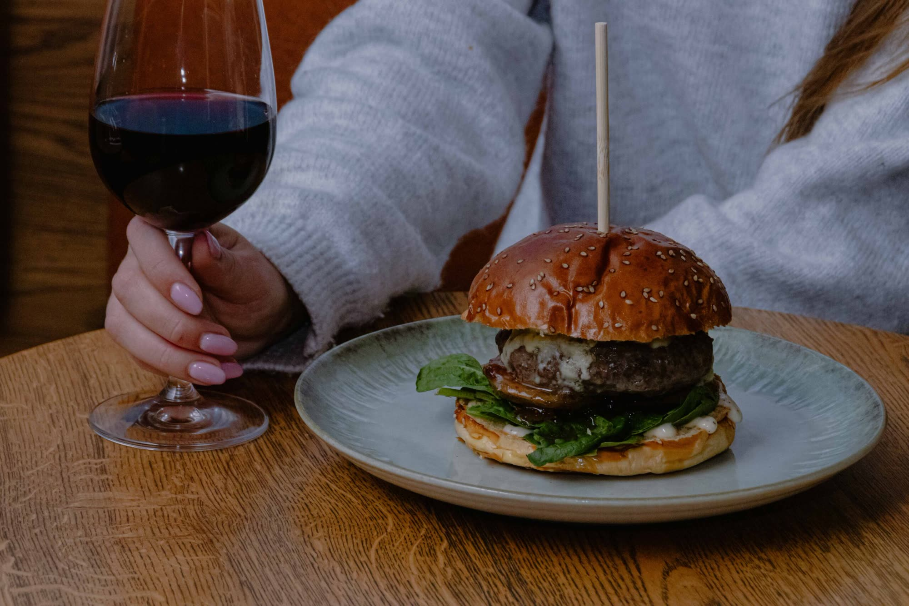
IVEAUBurgers en Wijnbar in Arnhem
Al ruim 10 jaar de beste burgers en wijnen, aan de Kleine Oord. Meerdere keren bekroond tot beste burger van Nederland.
Woensdag en donderdag vanaf 16.00 uur, vrijdag tot en met zondag vanaf 12.00 uur.
026 - 3796825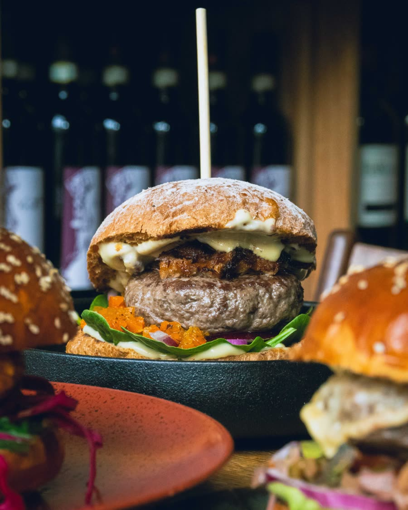
Nieuws
Boi d'ouro: de lekkerste burger van 2026
Ons team is de trotse winnaar van de Lekkerste Burger van 2026. Uiteraard staat hij op de kaart.
150 gram gerookte picanha burger, crème op basis van sjalotten, gesuikerde roodlof, salsa van tomaat, olijf en knoflook, gefrituurde cassave, sukade van runderstaartstuk, smokey cheddar, bruine bol van het Arnhemse bakkertje.
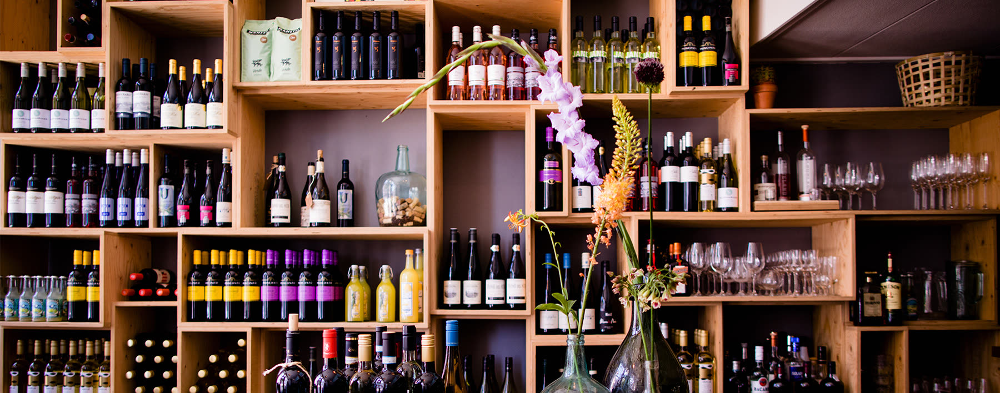
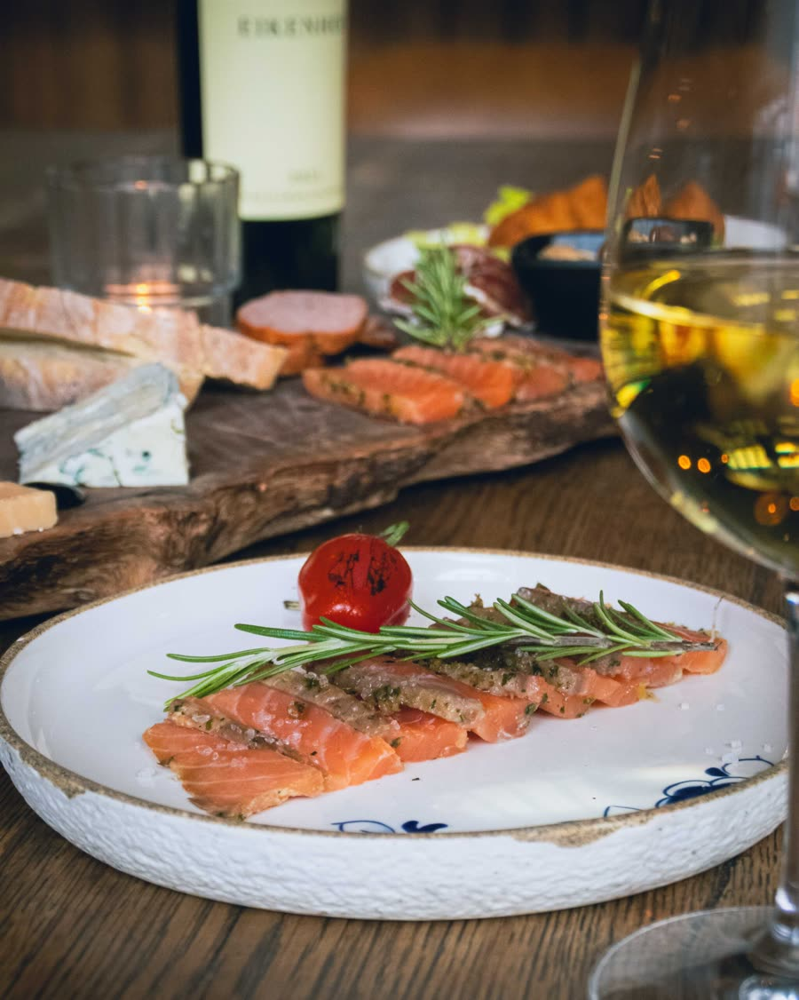
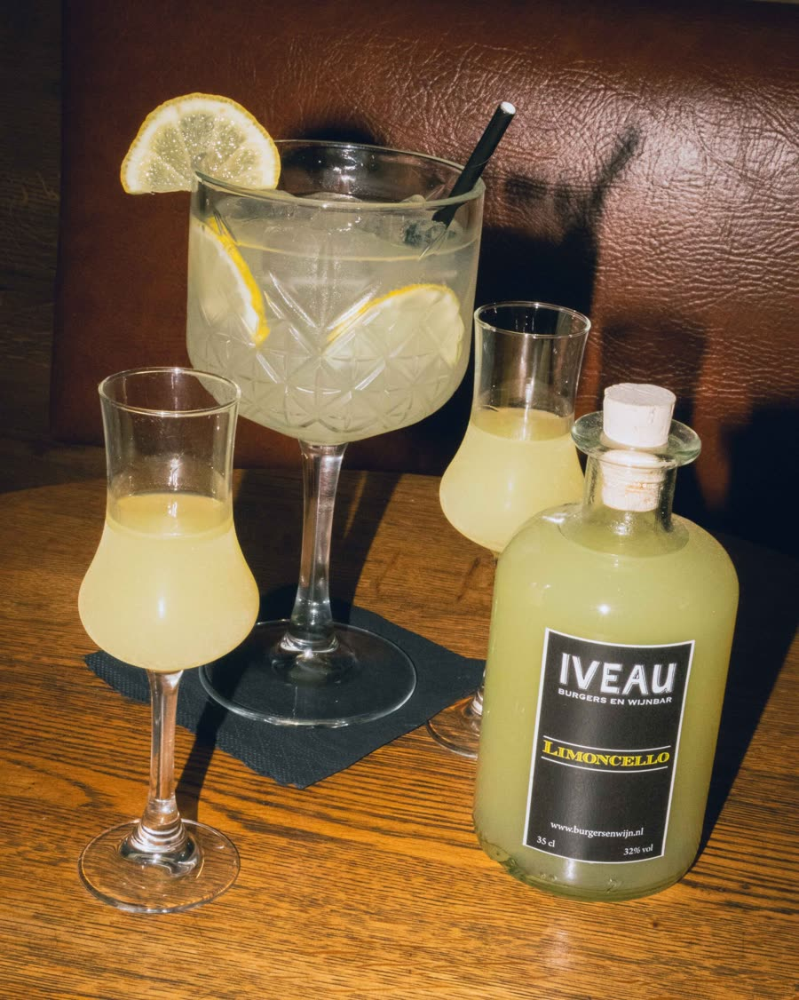
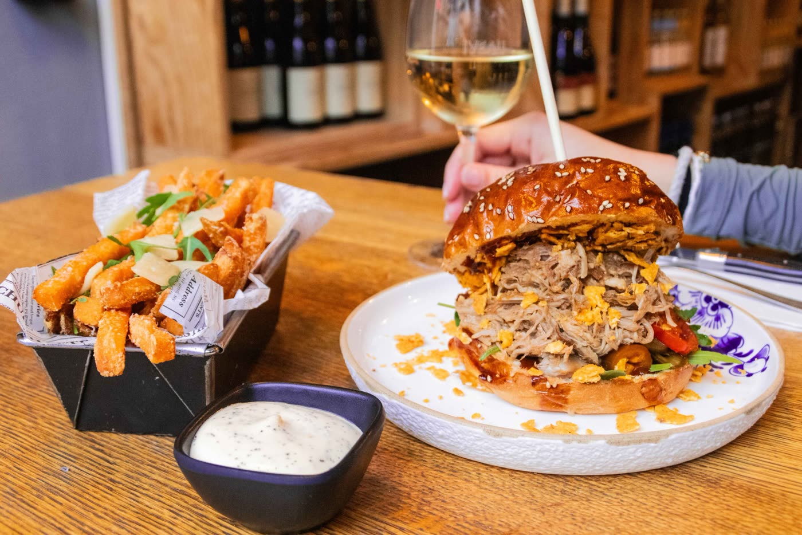
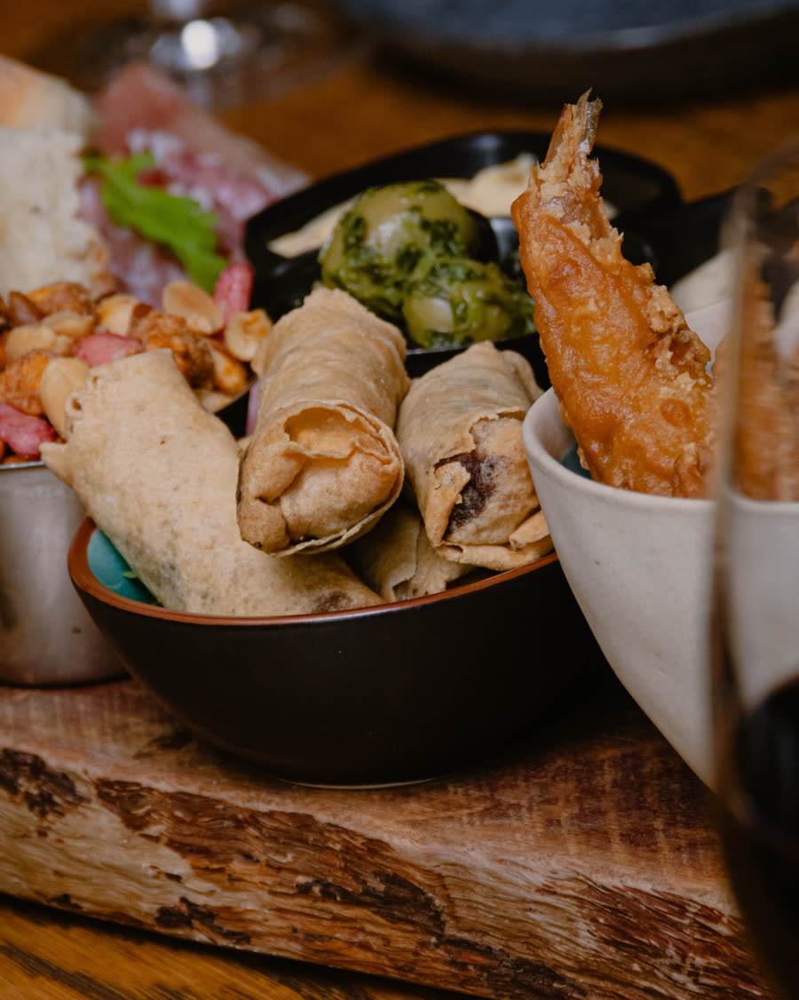
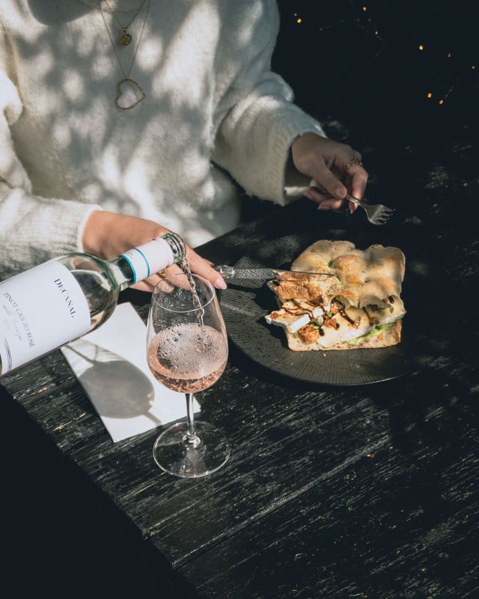
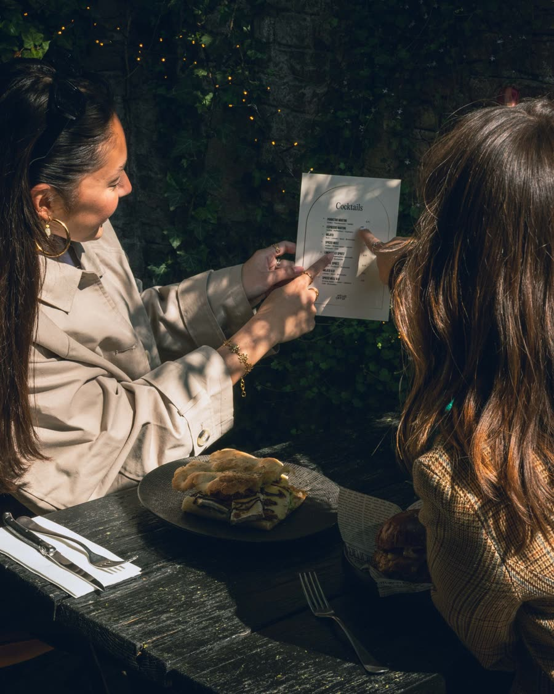
Wijnkaart
Prijzen per glas en per fles.
Bubbels
- Prosecco Frizzante6,75 / 42,50
Italië. Wit fruit, appel, citrus.
- Champagne Delot Grand Réserve Brutfles 55,00
Père et Fils, pinot noir. Fris, elegant, zachte mousse, zuiver, aangenaam droog, complex.
- Limoncello Iveau9,95
Huisgemaakte limoncello opgeschonken met prosecco.
Rosé
- De Canal pinot grigio rosato5,75 / 31,50
Licht rosé, licht romig, soepel.
Wit
- Huiswijn Valdecaz verdejo5,75 / 31,50
Spanje. Licht, wit fruit, appel en citrus.
- Wein Wurms Grüner Veltliner6,75 / 36,25
Oostenrijk. Fris, zuiver, kruidig.
- Dom Doriac chardonnay6,75 / 36,25
Frankrijk. Romig, rijp, geel fruit, houttonen.
- De Canal pinot grigio5,75 / 31,50
Italië. Droog, elegant, zuiver.
- Wijnen per fles7,50 / 41,25
Per fles hebben wij diverse heerlijk wisselende wijnen.
Rood
- Valdecaz tempranillo5,75 / 31,50
Spanje. Licht, toegankelijk, soepele afdronk.
- Rosso Piceno Naumakos8,25 / 45,25
Montepulciano/sangiovese. Vol, kruidig, zachte tannines.
- Barbera d'Asti Ca Nova6,95 / 38,25
Licht, sappig, rood fruit.
- Passo del Sud primitivo6,75 / 36,25
Italië. Zwoel, rijp fruit, rond.
- Haut Flassac syrah cabernet6,75 / 36,25
Vol, sappig, donker fruit.
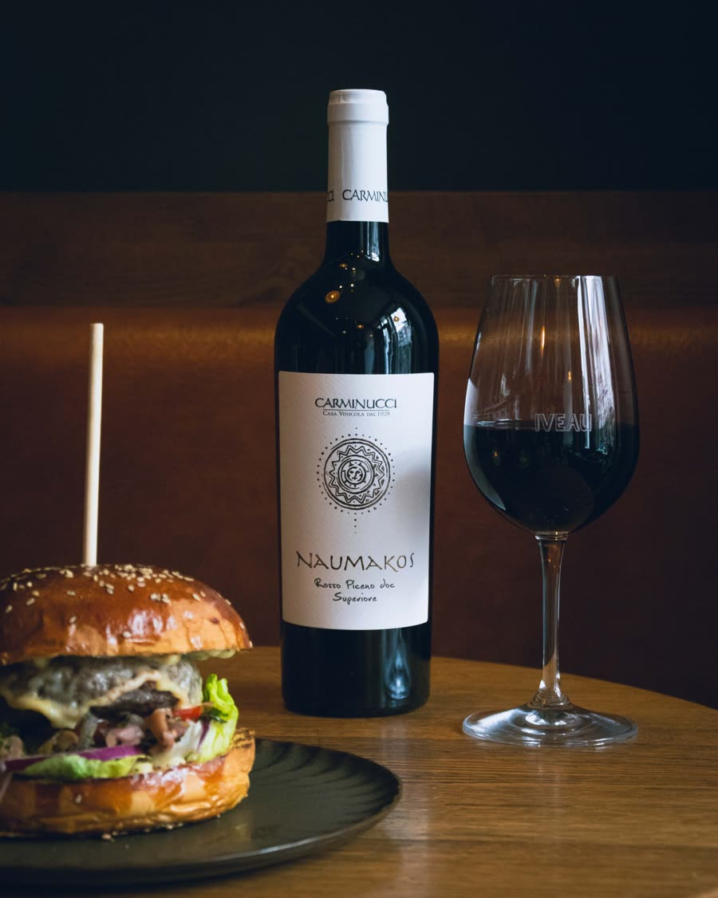
Welkom bij IVEAU Burgers en Wijn
Wij zijn een begrip in Arnhem en omstreken en hebben al ruim 10 jaar ervaring in het serveren van de beste burgers en wijnen. Met veel passie voor eten en wijn staan wij vijf dagen per week klaar voor onze gasten.
Wij zijn meerdere keren bekroond met de prijs voor de beste burger van Nederland en daar zijn wij ontzettend trots op. Het is voor ons de kroon op ons werk en een bevestiging dat wij op de goede weg zijn.
Bij IVEAU bieden wij niet alleen een ontspannen sfeer voor een informele avond uit, maar ook een stijlvolle omgeving voor een formeel diner. Of je nu met vrienden, familie, collega's of zakenpartners komt, wij zorgen ervoor dat je een geweldige avond hebt en geniet van onze burgers en wijnen.
De gastheer, Ivo, staat graag samen met ons team voor jullie klaar. Kom langs en ervaar zelf waarom wij al jaren een begrip zijn in Arnhem en omstreken.
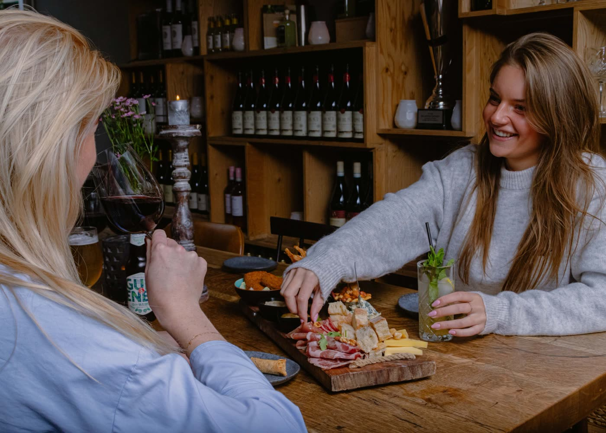
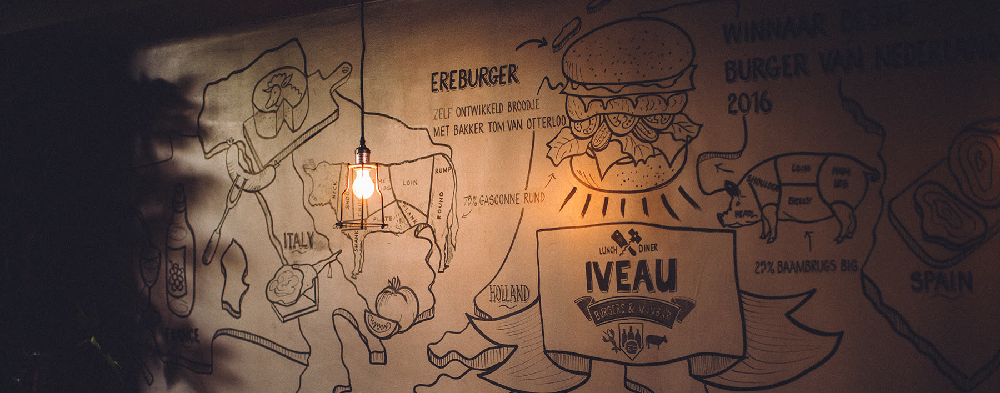
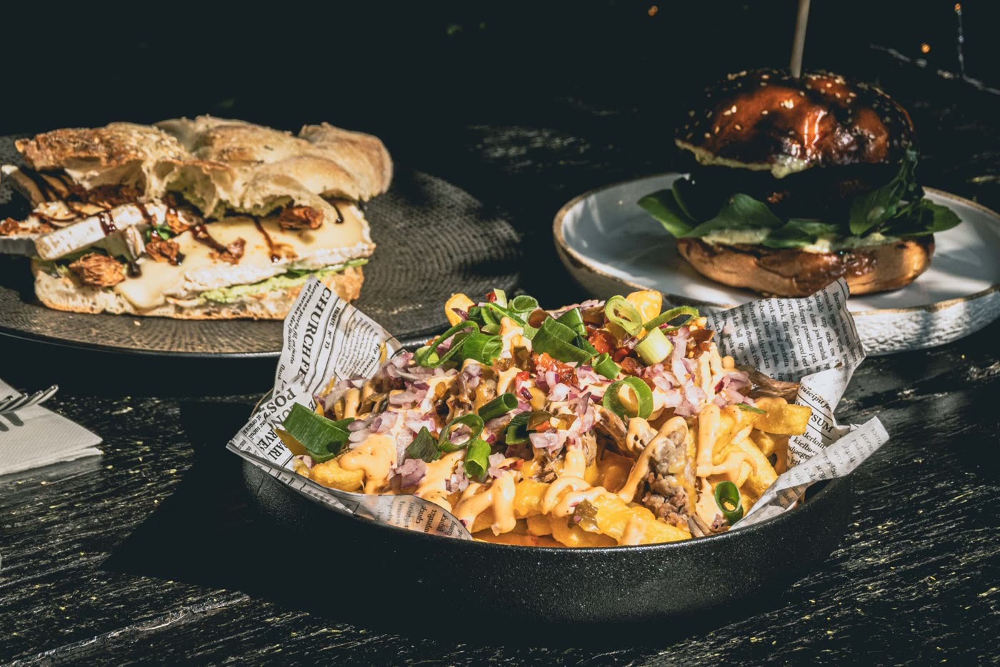
Afhalen en bezorgen
Bestel je burgers online en haal ze op aan de Kleine Oord.
| Woensdag en donderdag | 16.30 - 20.00 uur |
|---|---|
| Vrijdag, zaterdag en zondag | 12.30 - 20.00 uur |
Wij streven ernaar om de afhaalburgers op de afgesproken tijd klaar te hebben. Op drukke dagen kan dit iets uitlopen.
Online bestellenIVEAU in de media
In de afgelopen jaren is er al aardig wat over ons gezegd en geschreven. Daar zijn we erg blij mee en trots op. Een selectie.
- 2026
Winnende burger 2026
Uitslag NK Lekkerste Burger 2026 (Lekkerste Wedstrijden) - 2023
Winnende burger 2023
1e van de Beste Burger Benelux 2023 (Misset Horeca) - 2019
- 2018
- 2016
Kom langs
IVEAU Burgers en WijnbarKleine Oord 78
6811 HZ Arnhem
T 026 - 3796825 info@burgersenwijn.nl
Een tafel voor een groep of een zakelijk diner? Bel of mail ons gerust.
| Maandag | gesloten |
|---|---|
| Dinsdag | gesloten |
| Woensdag | vanaf 16.00 uur |
| Donderdag | vanaf 16.00 uur |
| Vrijdag | vanaf 12.00 uur |
| Zaterdag | vanaf 12.00 uur |
| Zondag | vanaf 12.00 uur |